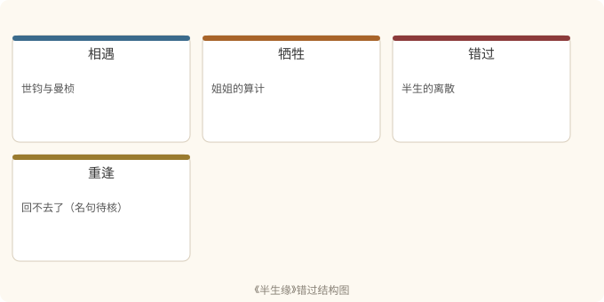

半生缘
一、基本信息
| 作者 | 张爱玲 |
|---|---|
| 成书/出版 | 1968年（作者页 B111 口径：半生缘（1968）） Zhang Ailing (Eileen Chang) — Encyclopaedia Britannica（百科全书） |
| 国别/地区 | 中国 |
| 时代 | 现当代 · 现代 |
| 体裁 | 长篇小说 |
| 语言 | 汉语（白话） |

《半生缘》错过结构图（主题·结构图）
二、创作背景
作者页（B111）：张爱玲 major_works 载'半生缘（1968）'（B111 作者页定位，详见 jinsuoji 条核对）。
前身：《十八春》（1950—51年连载说——通说待核）的改写。
三、内容脉络
沈世钧与顾曼桢的错过的半生：曼璐的算计与祝鸿才的暴力（通说待核）。
多年后重逢——'我们回不去了'（名句通说待核）。
四、主要人物表
| 人物 | 身份 | 说明 |
|---|---|---|
| 顾曼桢 | 职员 | 被姐姐牺牲（通说待核） |
| 沈世钧 | 青年 | 错过的爱人 |
| 顾曼璐 | 姐姐 | 献祭妹妹（通说待核） |
五、主题与艺术特点
- '回不去'的时间（名句待核）。
- 家族对女性的牺牲（通说）。
- 上海—南京的双城（通说待核）。
六、影响与评论
- 作者页：张爱玲后期代表作（B111 作者页口径）。
Zhang Ailing (Eileen Chang) — Encyclopaedia Britannica（百科全书） - 1997年许鞍华电影改编（通说待核）。
Zhang Ailing (Eileen Chang) — Encyclopaedia Britannica（百科全书）
七、阅读建议
难点
- 长篇的绵密铺陈。
- '十八春'与'半生缘'的版本对照。
- 《半生缘》（北京十月文艺出版社《张爱玲全集》，通说待核）。
先《倾城之恋》后本作。
八、待核实
- 《十八春》连载（1950—51《亦报》说）核对。
- 曼桢/曼璐人名核对。
- 1997年电影（许鞍华）待核。
本页主要来源
张爱玲的其他收录作品：金锁记